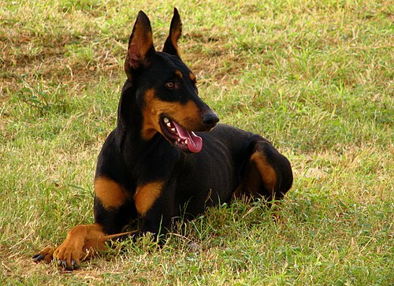

Доберман
- Порода короткошерстих службових собак
- виведена в Німеччині наприкінці XIX століття
- названа на честь свого творця Карла Фрідріха Луїса Добермана
Добермана офіційно визнали поліцейським собакою на початку XX століття, поки їх не потіснили універсальніші німецькі вівчарки
